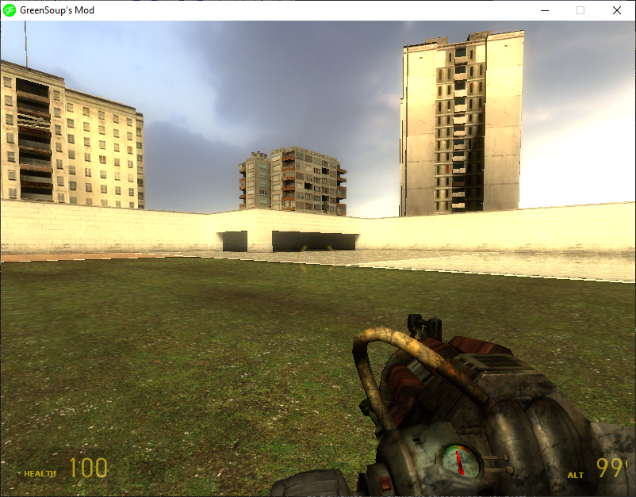
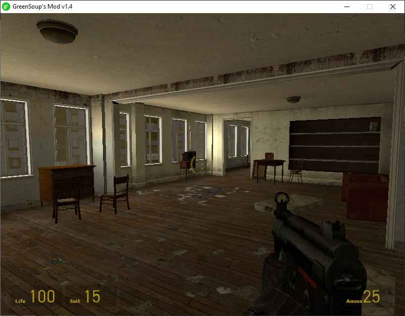

|   |
GreenSoup's Mod is a sandbox Mod for the Source Engine and Half-Life 2 based on Garry's Mod and JBMod. This mod's goal is to have a similar experience to Garry's Mod but Free |
To install GSMOD you need to:
1.Go to Steam, now to Library and search Source SDK Base 2013 Singleplayer and install it.
2.When it finished installing, Download GSMOD and then extract the .7z file with 7zip or WinRAR, and now copy the extracted folder and go to "C:\Program Files (x86)\Steam\steamapps\sourcemods" and paste the folder.
3.Now restart Steam and the mod should appear on your Library, enjoy!
GreenSoup's Mod v1.2 has been released! (06/12/2023)
GreenSoup's Mod v1.2 has been released today and its like a bugfix update or something. CHANGELOG:
A bit redesigned Menu
Bugfixes
A bit changed ToolGun
Added gs_structure
Updated glueblob model
And more things that im lazy to put here.